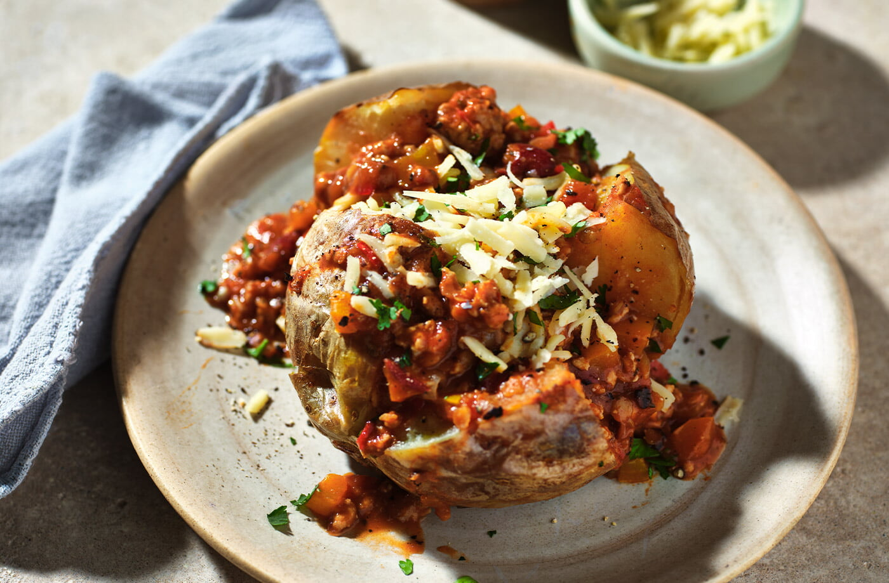

приготовление:
-
На сковороде разогреть масло на среднем огне. Выложить 500 г говяжьего фарша, обжаривать около 10 минут, постоянно помешивая и разбивая на мелкие кусочки, пока мясо не станет сухим и коричневатым. Переложить обжаренное мясо на тарелку.
-
Разогреть духовку до 200 °C.
-
На той же сковороде обжарить мелко нарезанный лук (1 большой или 1,5 средних). Добавить нарезанный 1 сладкий красный перец, 1-2 перца чили и измельченный чеснок 2–3 зубчика. Жарить около 5 минут, помешивая. Вмешать 2 ст.л. томатной пасты и готовить еще 2 минуты. Добавить 1 ч.л. кумина, 1 ч.л. орегано и 1,5 ч.л. копченой паприки, перемешать.
-
Вернуть на сковороду обжаренный фарш, влить банку томатов и 400 мл бульона. Перемешать и тушить на слабом огне 45–60 минут, периодически помешивая.
-
Тем временем запечь в духовке картофель в мундире.
-
В соус добавить банку красной фасоли (без жидкости) и 2 кусочка темного шоколада. Прогреть еще 5 минут. Проверить соль, выключить огонь и вмешать нарезанный свежий кориандр.
-
Для подачи выложить запеченную картофелину на тарелку, разрезать и раскрыть. Сверху выложить чили кон карне и подать со сметаной.